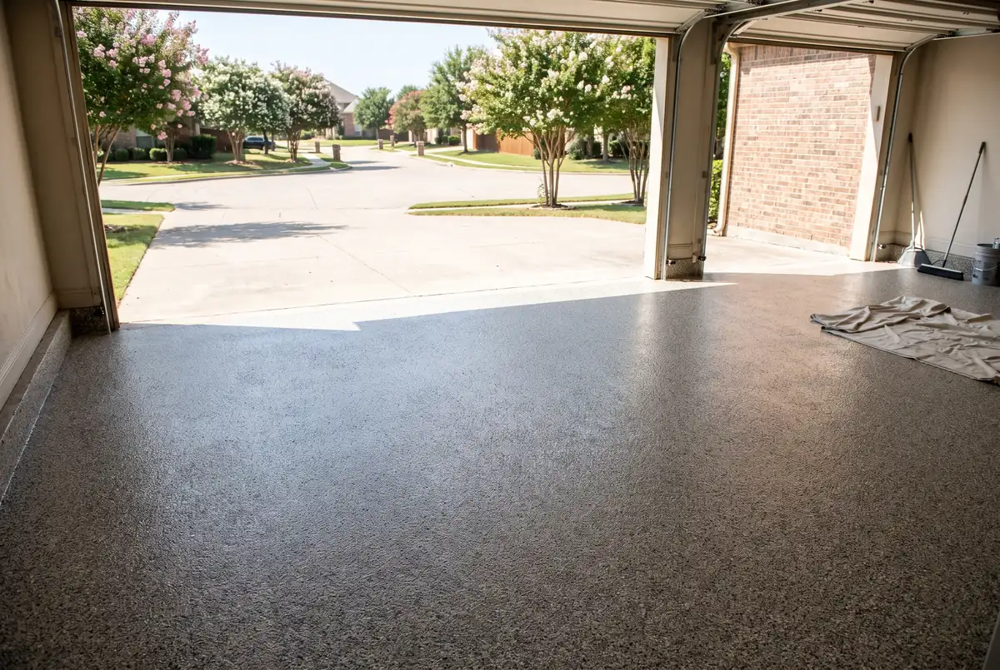
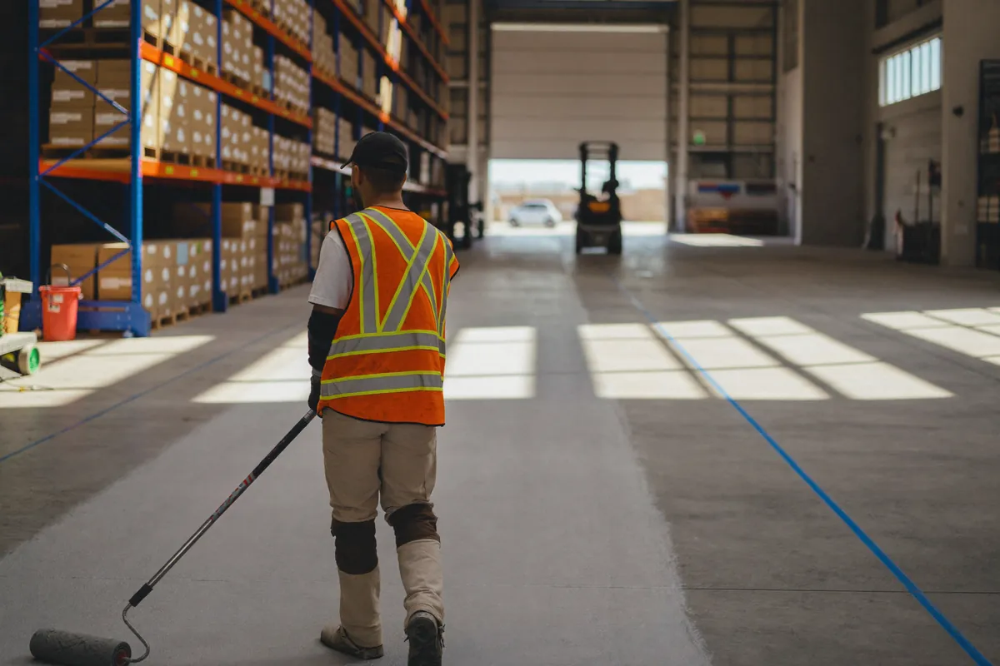

Epoxy Floor Coatings We Install in Irving
Every system starts with the same grind-and-repair prep. What changes is the look, the cure time and where the floor will be used.

Garage Floor Epoxy
Full-broadcast flake floors that hide dust, resist oil and stand up to hot tires.
Learn more →
Polyaspartic Coatings
Fast-curing, UV-stable coatings that won't yellow in a sunny, west-facing garage.
Learn more →
Metallic Epoxy Floors
Marbled, high-gloss floors for living spaces, offices and showrooms.
Learn more →
Commercial Epoxy Flooring
Seamless floors for warehouses, auto shops, kitchens and retail spaces.
Learn more →Not sure which one fits? See all of our epoxy flooring services or call (972) 640-6524.